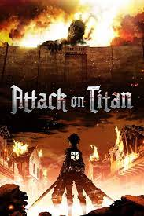

My Anime List
Monster

A brilliant neurosurgeon finds his life in utter turmoil after getting involved with a psychopathic former patient. Dr. Kenzo Tenma, a young but extremely talented neurosurgeon, lives his life working in a hospital in Germany.
Watch Online
Erased
Erased follows the Story of Satoru Fujinuma who is a 29 year old aspiring manga artist with the ability to travel backwards in time to prevent terrible things from happening. After the murder of a loved on he is launched back further in time than he has ever gone to prevent the tragedy from taking place.
Watch Online
Classroom of Elite
The story follows the perspective of Kiyotaka Ayanokōji, a quiet and unassuming boy, who is not good at making friends and would rather keep his distance, but possesses unrivaled intelligence. He is a student of Class-D, which is where the school dumps its inferior students.
Watch Online
Chainsaw Man

Denji was a small-time devil hunter just trying to survive in a harsh world. After being killed on a job, he is revived by his pet devil Pochita and becomes something new and dangerous—Chainsaw Man! Denji's a poor young man who'll do anything for money, even hunting down devils with his pet devil-dog Pochita.
Watch Online
Attack on Titan

It is set in a world where humanity is forced to live in cities surrounded by three enormous walls that protect them from gigantic man-eating humanoids referred to as Titans; the story follows Eren Yeager, who vows to exterminate the Titans after they bring about the destruction of his hometown and the death of his ...
Watch Online
Dragon Ball Super

A sequel to Toriyama's original Dragon Ball manga, it follows the adventures of Goku and friends during the ten-year timeskip after the defeat of Majin Buu. It began serialization in Shueisha's monthly shōnen manga magazine V Jump in June 2015.
Watch Online